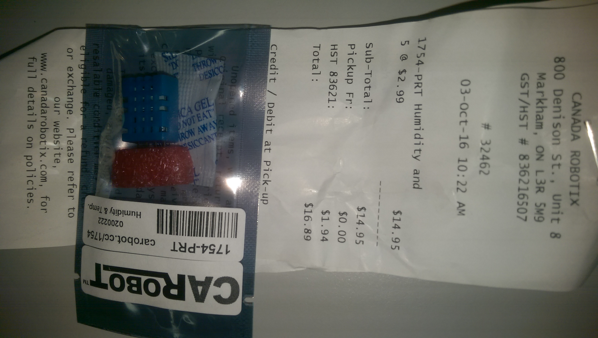
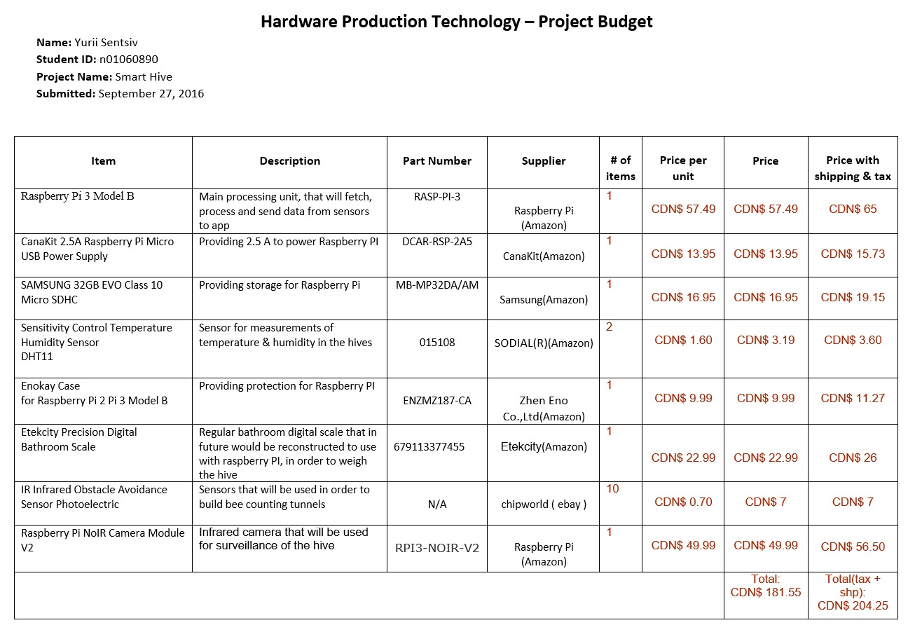
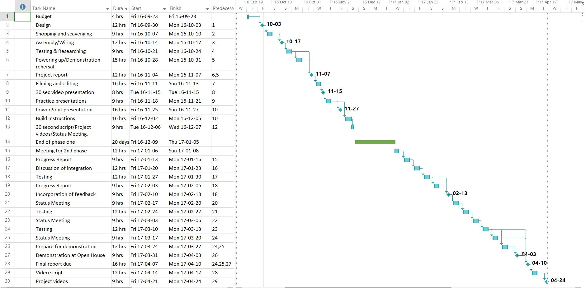
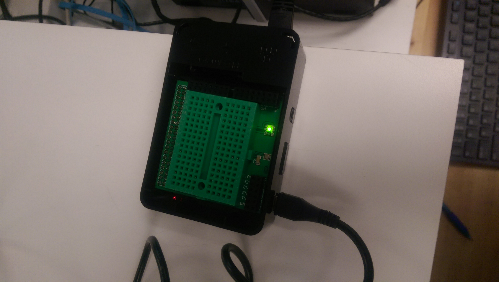

As for this time, my team members and me have figured out who is doing which part of final project. I am doing the temperature/humidity sensors implementation, in order to see the fluctuation of these data in the hive. This will be useful to be able to understand what is happening with hives. In order to be able to do it, after small research on web, I figured out that the best sensor that will satisfy my needs is Temperature & Humidity Sensor DHT11. In order to get more accurate measurement, I’ve bought 5 pieces of this sensor from the local retailer.



Making the LED on the Raspberry Pi Blink
